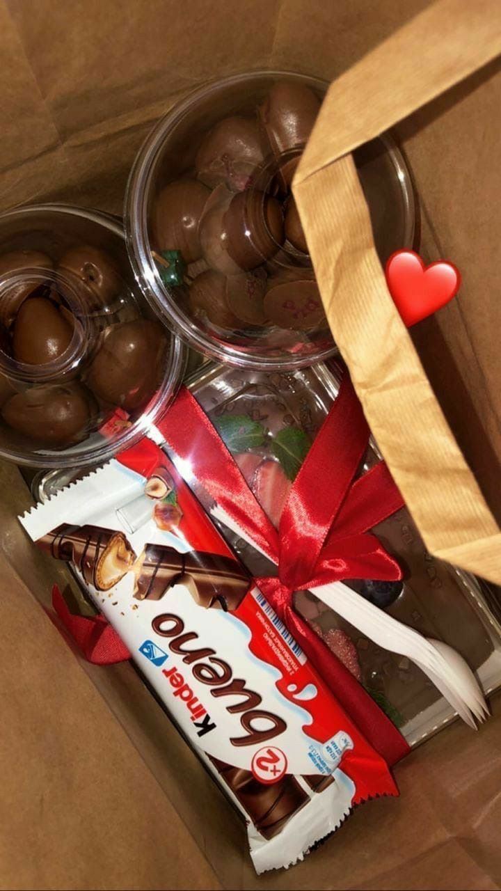
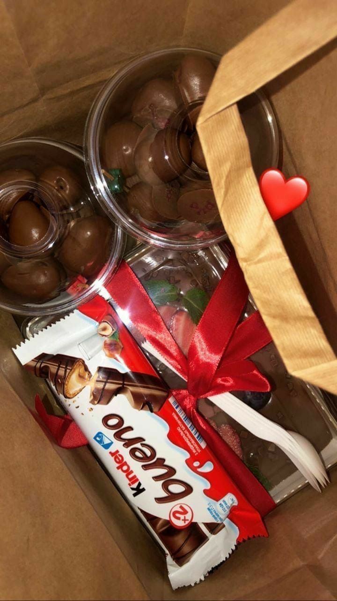
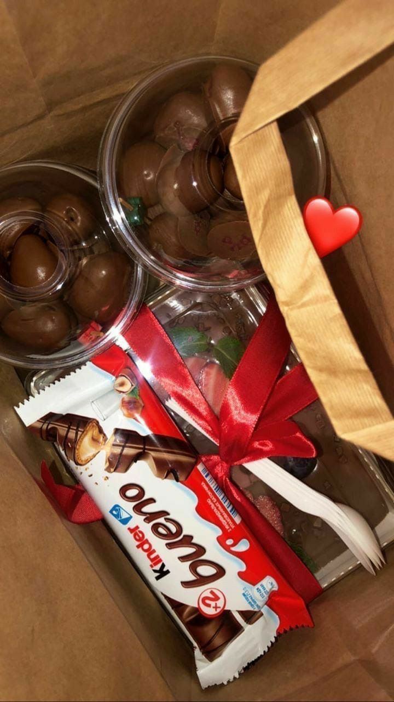
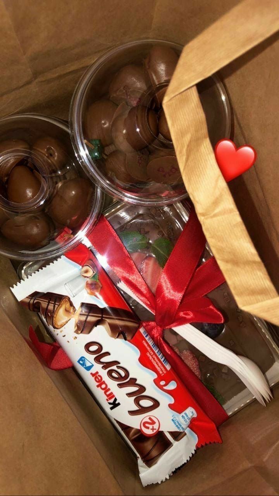

Uma jovem apaixonada por tecnologia desde pequena, está construindo seu futuro na área da programação! Ela adora mergulhar no mundo digital, desvendando os mistérios do código e criando soluções inovadoras. Ela é uma estudante dedicada do curso de GTI na Universidade Santo Amaro, em São Paulo, e seu entusiasmo é contagiante. 💖
Quando não está imersa em linhas de código, Rayka ama se perder nas páginas de um bom livro, curtindo a paz e o conforto do seu lar. Uma pessoa organizada e determinada, Rayka leva a sério seus compromissos e adora trabalhar em equipe, sempre pronta para colaborar e aprender com os outros. 🤝 Prepare-se para conhecer uma mente brilhante que une paixão por tecnologia, amor por livros e um espírito trabalhador. Essa é a prova de que o futuro da programação está em boas mãos! 🚀